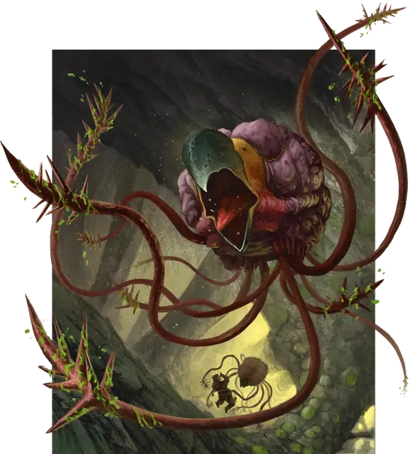

Грелл
Grell
Средняя Аберрация, Нейтральная Злая

Класс Защиты 12 Инициатива +6 (16)
Хиты 55 (10к8 + 10)
Скорость 10 футов, Полёта 30 футов (парит)
| мод | спас | ||
|---|---|---|---|
| СИЛ | 15 | +2 | +2 |
| ЛОВ | 14 | +2 | +2 |
| ТЕЛ | 13 | +1 | +1 |
| мод | спас | ||
|---|---|---|---|
| ИНТ | 12 | +1 | +1 |
| МДР | 11 | +0 | +0 |
| ХАР | 9 | −1 | −1 |
Иммунитеты Электричество; Опрокинутый, Ослеплённый
Чувства пассивное Восприятие 14, Слепое зрение 60 футов
Языки Глубинная речь
Опасность 3 (700 опыта; БВ +2)
Особенности
Похищение. Греллу не нужно тратить дополнительные футы для перемещения Схваченного им существа.
Действия
Мультиатака. Грелл совершает одну атаку Клювом и одну атаку Парализующими щупальцами.
Клюв. Бросок рукопашной атаки: +4, досягаемость 5 фт. Попадание: 11 (2к8 + 2) Колющего урона.
Парализующие щупальца. Бросок рукопашной атаки: +4, досягаемость 10 фт. Попадание: 7 (1к10 + 2) Колющего урона. Если цель Среднего размера или меньше, она получает состояние Схваченный (Сл освобождения от захвата 12) двумя из десяти щупалец. Цель также подвергается воздействию следующего эффекта. Спасбросок Телосложения: Сл 11. Провал: Цель получает состояние Отравленный и повторяет спасбросок в конце каждого своего хода, при успехе оканчивая на себе этот эффект. Через 1 минуту цель автоматически преуспеет в этом спасброске. Пока цель Отравлена таким образом, она Парализована.
Бонус мастерства +2
Среда обитания Подземье
Сокровища Отсутствуют
Грелл
Странствующий меж мирами причудливый охотник
Греллы похожи на парящие в воздухе мозги, из которых растут покрытые шипами щупальца. Эти бесшумные хищники охотятся в беспросветных глубинах и ориентируются с помощью звука и электрических полей. Они игнорируют законы гравитации и могут напасть на добычу с неожиданной позиции. Греллы утаскивают попавших в засаду существ в темноту, парализовав их ядом c щупалец, прежде чем жертвам удаётся закричать.
Хотя греллы и разумные существа, их мысли и мотивы остаются загадкой для всех. Как правило, они помогают друг другу лишь ради победы над трудной добычей. Большинство греллов ничего не создают и не интересуются общением с другими, в том числе и со своими собратьями.
Многие греллы ищут способы для путешествия между мирами и планами бытия. Иногда они проскальзывают на путешествующие межзвёздные корабли или в порталы независимо от места их назначения. Совершите бросок по таблице «Путешествие грелла» для вдохновения или выберите сами причину вояжа грелла между мирами.
Путешествие грелла
| 1к6 | Греллы путешествуют, потому что… |
| 1 | Они — совершенный вирус, а каждая особь — клон всех остальных. Могут лишь пожирать и распространятся. |
| 2 | Они — личинки другого существа, которые ищут среду с сильными электрическими полями для размножения. |
| 3 | Пытаются избежать какой-то катастрофы или ужаса, таящегося в глубинах. |
| 4 | Сверхъестественным образом связаны с хищными инопланетными существами и являются их питательными придатками. |
| 5 | Они — останки древнего зла, которое вернётся, когда греллы поглотят достаточно существ. |
| 6 | У них нет души, но они убеждены, что могут обрести её, пожирая некоторых существ. |